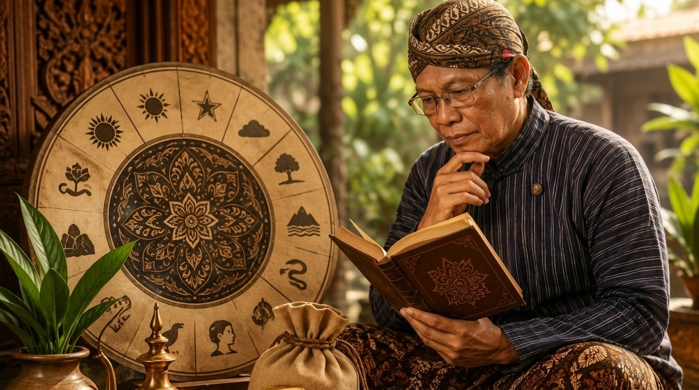

KAJIAN FILSAFAT UTTAMOPADESA

Perumus Kawruh Uttamopadesa: Dhimas Purnomo, SH
Filsafat merupakan kajian mendasar mengenai hakikat keberadaan, sumber pengetahuan, serta nilai dan tujuan yang mendasari kehidupan manusia. Melalui kajian filsafat, suatu pemikiran dapat dijelaskan landasannya, cara memahami pengetahuan, dan penerapannya dalam kehidupan.
Kawruh Uttamopadesa merupakan kawruh tentang kehidupan yang dirumuskan oleh Dhimas Purnomo. Pemikiran ini menghubungkan pemahaman mengenai hakikat kehidupan, sumber kawruh, kesadaran, serta pembentukan cipta, rasa, dan karsa dengan laku nyata manusia.
Untuk menjelaskan kerangka pemikirannya secara sistematis, Kawruh Uttamopadesa dapat dikaji melalui tiga bidang filsafat, yaitu ontologi, epistemologi, dan aksiologi. Ketiganya memiliki ruang kajian yang berbeda, tetapi saling melengkapi dalam membangun pemahaman yang utuh mengenai kehidupan dan laku manusia.
1. Kajian Ontologis Uttamopadesa
Hakikat yang Menjadi Landasan Kehidupan
Ontologi membahas hakikat keberadaan dan kenyataan yang menjadi dasar suatu pemikiran. Dalam kerangka Kawruh Uttamopadesa, kajian ontologis diarahkan pada pemahaman mengenai Sang Sumber Panguripan, Prabhawaning Panguripan, Kasunyatan Hakiki, dan Jatining Panguripan.
Sang Sumber Panguripan dipahami sebagai sumber kehidupan. Keberadaan-Nya tidak ditempatkan sebagai benda, lokasi, atau bentuk yang dapat dibatasi oleh pengertian manusia. Panguripan merupakan kenyataan yang dialami manusia, sedangkan pemahaman tentang sumbernya mengarahkan manusia untuk memandang hakikat keberadaan secara lebih mendalam.
Prabhawaning Panguripan menunjuk pada daya atau perwujudan keberlangsungan kehidupan. Melalui kehidupan, manusia berhadapan dengan berbagai kenyataan yang dapat diamati, dialami, dan dipahami. Namun, kenyataan yang tampak tidak dengan sendirinya mencakup seluruh hakikat yang mendasarinya.
Kasunyatan Hakiki merupakan kenyataan mendasar yang tidak semestinya disamakan begitu saja dengan pendapat, dugaan, atau penafsiran pribadi. Dalam kerangka ini, Jatining Panguripan dipahami sebagai hakikat kehidupan yang menjadi landasan keberadaan.
Kerangka Ontologis
Sang Sumber Panguripan → Prabhawaning Panguripan → Kasunyatan Hakiki → Jatining Panguripan
Manusia sebagai Kesatuan Unsur Kehidupan
Kajian ontologis Uttamopadesa juga membedakan unsur-unsur kehidupan manusia. Raga merupakan unsur jasmani yang berhubungan dengan keberadaan fisik dan pancaindra. Prana berkaitan dengan daya kehidupan jasmani, sedangkan Jiwa merupakan unsur rohani yang tidak disamakan dengan tubuh fisik.
Kesadaran berkaitan dengan kemampuan manusia menyadari, mengenali, dan memahami sesuatu. Dalam kehidupan batin, kesadaran berhubungan dengan cipta, rasa, dan karsa. Ketiganya merupakan unsur penting dalam proses manusia memahami keadaan dirinya, menimbang sesuatu, serta menentukan arah tindakan.
Pembedaan tersebut diperlukan agar Raga, Prana, Jiwa, kesadaran, dan cipta-rasa-karsa tidak dicampuradukkan sebagai istilah yang memiliki arti sama. Setiap unsur mempunyai kedudukan dan fungsi tersendiri dalam kerangka pemikiran Uttamopadesa.
2. Kajian Epistemologis Uttamopadesa
Sumber dan Proses Memahami Kawruh
Epistemologi membahas sumber, proses, dan batas pengetahuan. Dalam Kawruh Uttamopadesa, kajian epistemologis menempatkan persoalan kawruh sebagai hal mendasar: dari mana pemahaman berasal, bagaimana manusia menerima dan mengolahnya, serta bagaimana pemahaman itu diwujudkan dalam kehidupan.
Uttamopadesa membedakan Kawruh Sejati dan Kawruh Kasunyatan. Kawruh Sejati dipahami sebagai pepadhang yang menjadi landasan pengenalan terhadap kebenaran sejati. Kawruh Kasunyatan merupakan pemahaman manusia mengenai kenyataan yang dikenali dan dipahami melalui kesadarannya. Keduanya berkaitan, tetapi tidak dapat begitu saja diperlakukan sebagai istilah yang sama.
Manusia dapat mengamati peristiwa, menerima informasi, menggunakan penalaran, dan mengambil pelajaran dari pengalaman. Semua itu menjadi bagian dari proses memahami kehidupan. Namun, informasi, penalaran, dan pengalaman tidak otomatis menjamin bahwa setiap kesimpulan manusia telah sesuai dengan kenyataan yang sesungguhnya.
Oleh sebab itu, kejernihan cipta diperlukan agar manusia tidak tergesa-gesa menerima pendapat sebagai kebenaran. Ketulusan rasa diperlukan agar penilaian tidak semata-mata dikuasai kepentingan pribadi. Keutamaan karsa diperlukan agar pengetahuan tidak berhenti sebagai gagasan, melainkan menjadi dasar tindakan yang bertanggung jawab.
Dari Pemahaman Menuju Laku
Dalam Uttamopadesa, kawruh tidak dimaksudkan berhenti pada penguasaan istilah atau kemampuan menjelaskan suatu konsep. Pemahaman memperoleh arti dalam kehidupan ketika diwujudkan melalui sikap, keputusan, dan tindakan.
Proses tersebut menuntut manusia untuk membedakan kenyataan dari anggapan, menimbang akibat dari tindakannya, dan memeriksa apakah laku yang dijalankan selaras dengan pemahaman yang dipegang. Dengan demikian, hubungan antara kawruh dan laku merupakan bagian penting dari kerangka epistemologis Uttamopadesa.
Pokok Kajian Epistemologis
Kawruh Sejati → Pepadhang → Pemahaman terhadap Kasunyatan → Kawruh Kasunyatan → Laku
3. Kajian Aksiologis Uttamopadesa
Nilai, Tujuan, dan Penerapan Kawruh
Aksiologi membahas nilai, tujuan, dan kegunaan suatu pemikiran dalam kehidupan. Dalam Kawruh Uttamopadesa, kajian aksiologis berkaitan dengan bagaimana pemahaman tentang kehidupan digunakan untuk membentuk budi pekerti, menata perilaku, serta membangun hubungan yang selaras dengan sesama dan lingkungan.
Kawruh yang tidak memengaruhi cara seseorang bersikap dan bertindak belum sepenuhnya diwujudkan dalam laku. Oleh karena itu, Uttamopadesa menempatkan pembentukan kualitas cipta, rasa, dan karsa sebagai bagian penting dari penerapan kawruh dalam kehidupan sehari-hari.
Weninging Cipta
Weninging Cipta menunjuk pada kejernihan dalam berpikir dan memandang persoalan. Manusia perlu menghindari penilaian yang terburu-buru, prasangka yang tidak diperiksa, serta pemikiran yang hanya membenarkan kepentingan dirinya. Cipta yang wening membantu seseorang melihat persoalan dengan lebih jernih dan mempertimbangkan akibat tindakannya.
Tulusing Rasa
Tulusing Rasa menekankan ketulusan dalam menyikapi kehidupan dan menjalin hubungan dengan sesama. Ketulusan bukan sekadar ungkapan atau kesan lahiriah, melainkan sikap batin yang tidak menyembunyikan kepentingan buruk di balik perbuatan yang tampak baik. Nilai ini mendukung tumbuhnya kepedulian, penghormatan, dan tanggung jawab.
Utamaning Karsa
Utamaning Karsa menekankan keutamaan kehendak yang diwujudkan dalam tindakan. Karsa tidak cukup hanya berupa keinginan atau niat. Karsa perlu diarahkan pada laku yang selaras dengan kejernihan cipta dan ketulusan rasa. Dengan demikian, tindakan manusia tidak hanya menguntungkan dirinya sendiri, tetapi juga mempertimbangkan kebaikan dan tanggung jawab terhadap kehidupan.
Triad Nilai dan Laku Uttamopadesa
Weninging Cipta — Tulusing Rasa — Utamaning Karsa
Tujuan: Urip Sejati
Urip Sejati dalam kerangka Uttamopadesa menunjuk pada kehidupan yang telah mencapai kepenuhan. Kepenuhan ini tidak hanya diukur dari keberhasilan lahiriah, banyaknya pengetahuan, atau kemampuan memenuhi keinginan pribadi. Urip Sejati berkaitan dengan keselarasan pemahaman, kesadaran, kualitas batin, kehendak, dan laku kehidupan.
Dengan demikian, tujuan penerapan Uttamopadesa bukan semata-mata membuat manusia mengetahui berbagai ajaran, melainkan menuntun manusia agar mampu menjalani kehidupan dengan lebih jernih, tulus, utama, dan bertanggung jawab.
Kesatuan Tiga Kajian
Ontologi, epistemologi, dan aksiologi mempunyai titik perhatian yang berbeda. Ontologi membahas hakikat keberadaan; epistemologi membahas sumber dan proses pemahaman; sedangkan aksiologi membahas nilai, tujuan, dan penerapan pemahaman dalam kehidupan.
Dalam Kawruh Uttamopadesa, ketiganya membentuk satu kerangka yang saling melengkapi. Pemahaman mengenai hakikat kehidupan memberikan landasan bagi pengenalan kawruh. Pemahaman tersebut selanjutnya menjadi dasar untuk menata cipta, rasa, dan karsa, kemudian diwujudkan dalam laku yang nyata.
Ketiga kajian tersebut tidak dimaksudkan sebagai bagian yang terpisah tanpa hubungan. Hakikat yang dipahami perlu menjadi dasar pengetahuan, sedangkan pengetahuan perlu diwujudkan dalam tindakan yang bernilai. Sebaliknya, laku juga menjadi ruang bagi manusia untuk melihat kembali pemahaman dan sikap yang mendasari tindakannya.
Kerangka Filsafat Uttamopadesa
Ontologi: Hakikat Kehidupan
Epistemologi: Sumber dan Pemahaman Kawruh
Aksiologi: Nilai dan Laku Kehidupan
Penutup
Kajian filsafat Uttamopadesa melalui pendekatan ontologis, epistemologis, dan aksiologis memberikan kerangka untuk menjelaskan landasan pemikiran, cara memahami kawruh, serta tujuan penerapannya dalam kehidupan manusia.
Secara ontologis, Uttamopadesa membahas hakikat kehidupan dan keberadaan manusia. Secara epistemologis, Uttamopadesa menjelaskan hubungan antara Kawruh Sejati, Kawruh Kasunyatan, pemahaman, dan laku. Secara aksiologis, Uttamopadesa menempatkan Weninging Cipta, Tulusing Rasa, dan Utamaning Karsa sebagai bagian penting dalam mewujudkan kehidupan yang utama.
Keseluruhan kerangka tersebut menegaskan bahwa kawruh tidak berhenti pada pemikiran. Kawruh perlu diwujudkan dalam laku agar memiliki arti dalam kehidupan. Inilah arah dasar Kawruh Uttamopadesa: memahami hakikat, menjernihkan pemahaman, dan menjalani kehidupan dengan budi pekerti yang utama.
FAQ — Kajian Filsafat Uttamopadesa
1. Apa yang dimaksud dengan Kajian Filsafat Uttamopadesa?
Kajian Filsafat Uttamopadesa adalah pembahasan sistematis mengenai landasan pemikiran Uttamopadesa melalui tiga bidang, yaitu ontologi, epistemologi, dan aksiologi.
2. Siapa yang merumuskan Kawruh Uttamopadesa?
Kawruh Uttamopadesa dirumuskan oleh Dhimas Purnomo sebagai kerangka kawruh untuk memahami kehidupan dan mewujudkan pemahaman melalui laku.
3. Apa yang dibahas dalam ontologi Uttamopadesa?
Ontologi membahas hakikat keberadaan dan kehidupan, termasuk Sang Sumber Panguripan, Prabhawaning Panguripan, Kasunyatan Hakiki, Jatining Panguripan, serta unsur-unsur kehidupan manusia.
4. Apa perbedaan Kawruh Sejati dan Kawruh Kasunyatan?
Kawruh Sejati dipahami sebagai pepadhang yang menjadi landasan pengenalan terhadap kebenaran sejati, sedangkan Kawruh Kasunyatan merupakan pemahaman manusia mengenai kenyataan. Keduanya berkaitan, tetapi tidak identik.
5. Apa pokok kajian aksiologis Uttamopadesa?
Pokok kajiannya meliputi nilai dan penerapan kawruh dalam kehidupan, terutama melalui Weninging Cipta, Tulusing Rasa, dan Utamaning Karsa.
6. Apa tujuan penerapan Kawruh Uttamopadesa?
Tujuannya adalah menuntun manusia memahami kehidupan dan mewujudkan pemahamannya dalam laku yang jernih, tulus, utama, dan bertanggung jawab menuju Urip Sejati.